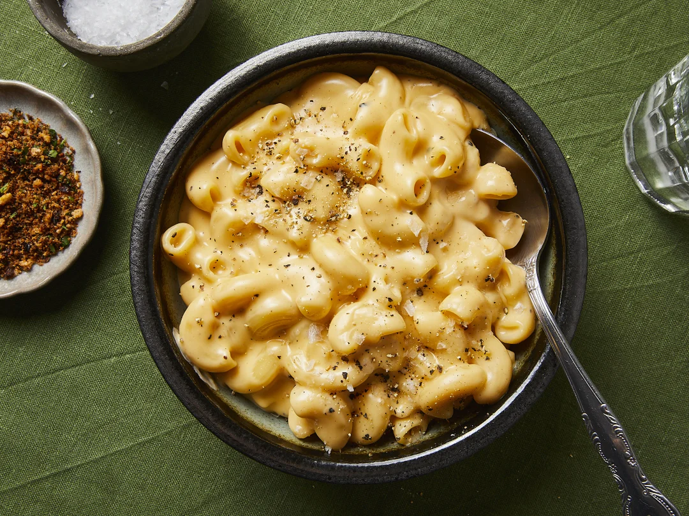

Makaronu un siera recepte
Makaronu un siera ēdiens, pazīstams arī kā "mac and cheese", ir populārs ēdiens, kas sastāv no makaroniem un siera mērces. Šī ēdiena izcelsme ir saistīta ar Eiropu, kur līdzīgas receptes tika gatavotas jau viduslaikos. Tomēr mūsdienu versija kļuva īpaši populāra Ziemeļamerikā, kur tā bieži tiek uzskatīta par komforta ēdienu.
Sastāvdaļas
- 200 g makaroni
- 150 g rīvēts siers
- 200 ml piens
- 2 ēdamkarotes sviests
- 1 ēdamkarote milti
- Sāls un pipari pēc garšas
Pagatavošana
- Uzvāriet makaronus sālītā ūdenī, līdz tie ir gatavi. Nokāsiet un noliekat malā.
- Katliņā izkausējiet sviestu un pievienojiet miltus. Maisiet, līdz izveidojas viendabīga masa.
- Lēnām pievienojiet pienu, nepārtraukti maisot, lai izvairītos no kunkuļiem.
- Pievienojiet rīvēto sieru un maisiet, līdz tas ir pilnībā izkusis.
- Pievienojiet sāli un piparus pēc garšas.
- Sajauciet makaronus ar siera mērci un pasniedziet siltus.
Recepte sagatavota ar mīlestību!
Home